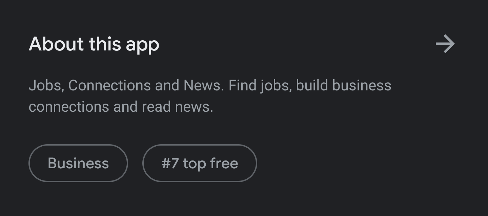

Centralizing News from LinkedIn Companies
Web-Development (Side-Project)
Role: Designer/Developer
Timeline: July 2020 (1 Week)
LinkedIn is the go-to networking platform for most professionals looking to connect with both past and
present colleagues. Aside from following connections and being able to see job updates and posts,
LinkedIn users can also follow companies and see related news articles in their feed.
Following companies can be helpful when wanting to keep a list of prospective employers and simply being
up-to-date on any information and public statements that the company gives out on their own. In
addition, a benefit of this would be to also see a catered list of recommended companies upon following
the organization. Despite directly opting in for the companies' own posts, jobs, and other content, one
thing you're indirectly opting in for is "relevant" news.
The problem I face with LinkedIn is its method of displaying news in no particular order across my feed,
with no way of organizing the articles. To see news articles on companies I followed, I would have to
either scroll through the feed and wait until I see an article, or resort to a 3rd-party and searching
each company individually. As a result, I worked on a side-project to see how this could improve my own
experience and later developed a web-app to view news on companies I'm interested in!
The Process
LinkedIn's Current State
Prior to pursuing any sort of project, I did a crawl of LinkedIn's site (and Android app) and settings to look for a traditional news section. Though I did find their app in the Play Store to describe itself as "Jobs, Connections and News...", I couldn't actually find any news.
One type of news I did find, however, was a list of trending, work-related topics, which might be nice to some users at times. Checking it out, it brings me to posts written by LinkedIn's own editors, but again, doesn't seem to be something where I could select topics I'm interested in (i.e: it seems to be just generic content — honestly something I've never used and probably will continue to never use).
Then there's LinkedIn's algorithm.
Focusing on the desktop site now, when scrolling through your feed, with the sorting option set to
'Top', news articles come up in a scattered way. For each company that you follow, you may see a news
article, claiming to be shown because the company that you follow was mentioned in that article. This is
better than the above, as I chose to follow this company and news about them is relevant to me. The
problem is, where's the rest of the news about the company (aside from all of the content that the
company posts themselves)?
Going through the menu, the options don't lead to a single place that houses these relevant news
articles.
Why would I need to see additional news? Well to me, it's important as it helps me avoid relying on a
single source for being informed — especially with the rise of fake news and clickbait.
I looked specifically at how LinkedIn curates these articles, and it's simply just their algorithm. It's
automated, it's not 100% accurate, and you can't turn it off! So now I'm stuck.
Focusing the Problem
The problem to me was straight-forward: As an avid LinkedIn-user, I want to see news about companies I
follow closely, however, I'm limited by LinkedIn's algorithm in showing me scarce articles scattered
along my news feed. Although a mouth-full, I basically didn't have a way of consuming all my company
news in an organized fashion.
Before doing any ideation, I questioned if there was anything out there that solved my problem.
Other "News" Sites
Right away, I wanted to avoid news companies as that would be limiting me to one source (i.e: using CNN or Toronto Star for all my company news). From here, I looked at the first two options that came to mind, Google and Facebook.
Google News
Google News has a great way of displaying articles. Everything is in a straight-forward list, there is a
source, headline, and even a brief description (for some); some also have pictures included. It's really
simple and that makes it easy to scan through and locate a specific article.
The problem was that I'd have to search each company individually. It's not hard to Google a single
company, sure, but it becomes a chore when searching through a bunch of companies I intentionally
followed on Linkedin (it's supposed to be their job).
Facebook News
Facebook News looked promising, until I saw it was limited to the app and the U.S, so that was scrapped as an alternative; although this is something I'll have to come back to when it's introduced in Canada.


Ideating a Solution
My goal was clear, to create a page of curated news for companies that I'm currently following. I had
multiple ideas, ranging in complexity: (1) use Python or a third-party API to scrape my LinkedIn profile
for the companies I follow and then use a news API to display articles for each company or (2) just make
a list of companies and use that same news API for the articles. I went the easy route as it would have
less dependence on the status of my LinkedIn (and because it's easy).
Designing it visually, I wanted to take some inspiration from Google News and display the news in a
list. I liked the fact that it was easy to scan, so my idea was to place a few articles under each
company name, and have the user (me) scroll through it.
As the design/layout was simple enough, I wanted to quickly code up a prototype. I used cards to show each article and displayed a few under each company (easily done using the 2 nested for-loops above).

Using Google Sheets and a 3rd-Party API
Again, simplicity was top of mind so I decided to use Google Sheets to house the company names, rather than a formal database. A small drawback I faced was, when researching the Sheets API (v4), I found that it would require me to sign-in constantly to be able to read my data (as a security measure). As security wasn't a concern, since I only needed a list of companies, I made my sheet public and fetched the data and transferred it into JSON.
For collecting news articles, I started searching for free news APIs and came across gnews.io, an
unofficial API for Google News. Using the free plan, I could get up to 10 articles/ request and I'm
limited to 100 requests/ day. Something that I soon learned after testing was I was also limited to 10
requests, simultaneously; anything more than 10 wouldn't display anything.
Despite the limitations, I was happy that it pulled a ton of data for each article, including a title,
URL, description, time of publishing and an image. Though the published time was in a traditional date
format, I used moment.js to convert it to English. Super helpful.
The Final Site
The full website can be accessed here!
Just before launching, I threw in a search-bar. I remembered that as I was limited in how many
simultaneous requests I could have, I could only see a maximum
of 10 companies and their articles at once. For companies that I didn't have in my list, I wanted to be
able to search for them. From here, the form would collect the users' input and run it through the GNews
API and display the corresponding news there.

What I Learned From This
Being a designer, and more interested in the product management & consulting side of things, I haven't really developed anything in the past few years. This project was an exploration which also helped me learn JavaScript at the same time, while working with APIs. Although it was an exploration, I'm happy I actually made something I can use daily, and something that improves my experience over relying on LinkedIn's algorithm for news. I know I'll probably look back at this and end up either redesigning or recoding a few aspects, but for now it's not bad for a week's worth of work!